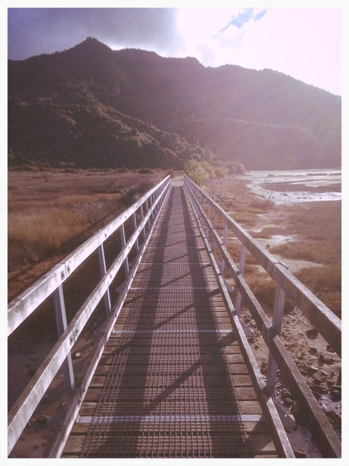
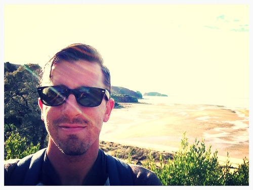
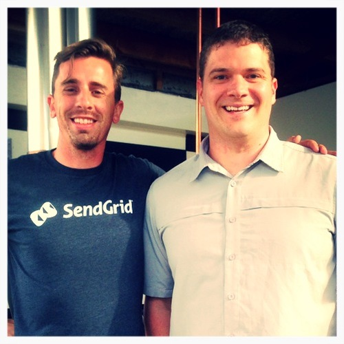

My car is off the ferry. I’m on the South Island. I stop at the first gas station and fill up. Gas stations here are not pre-paid. They are on your honor. Fill up, note the cost, walk inside, and pay the cashier the amount due. I note to myself how I’ve never seen this in the USA, but I imagine it was the standard 40 years ago. Back on the road, I drive towards Nelson.
A few months back, I was tasked with creating the sendgrid-apex library for our work. Apex is a language like Java - only worse. I sought out help to build it using AirPair. AirPair put me in touch with Daniel over Skype, and we pair programmed to write the sendgrid-apex library. He lives in Nelson, New Zealand so I messaged him on twitter saying I’d be in town. Daniel and I set up a coffee meet for the next day.
Before too long, I was passing through Nelson on my way to Abel Tasman National Park. I arrived late at night, pulled into a campground, paid $20 to park, had a warm shower, cooked some beans and a bit of meat, had two glasses of wine, and went to sleep.
The next morning, I was up early for a hike along Abel Tasman’s famous trail. I hiked for just 3 hours. It was picturesque. I want to return someday and hike the entire trail.
Back in my car, I drove towards Nelson to meet with Daniel. I was an hour early for our coffee meetup, so I stopped into a surf shop. I walked out with a surfboard.
Daniel and I met at one Nelson’s fine coffee shops. I had an espresso. Daniel had a hot chocolate. We chatted about technology and New Zealand.
It was nice to meet in person someone who lives so far away from me yet was such a help to me on a professional task. Technology and travel are delightful.
The barista took a photo of us, and then I was off; back to the ferry to catch the last one back to the North Island - my heart now set on surfing New Zealand’s west coast.